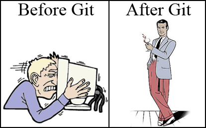

Downloading and Installing SPM12w#
Downloading SPM12w from github#
As of 2024, SPM12w has been moved back to github after a long hiatus of the repository being private as the code was updated and made compatible with the BIDS specification.
To install SPM12w it is recommended that you clone the SPM12w repository using the following address: https://github.com/ddwagner/SPM12w.git. Alternatively, if you do not want to use Git, you can go to the GitHub address listed above and download an archive of the entire repository.
Why Git?#
{kind=link}
Installing SPM12w with Git#
The following is a brief description of how to clone SPM12w repository using Git and how to check for updates. There are many guides you can use to get familiar with Git if you are not already. For instance, the “simple guide - no deep shit!” web page is a great place to start https://rogerdudler.github.io/git-guide/.
From within your computer or server’s Matlab directory, you can clone the SPM12w repository using the following command within a terminal window on Linux/mac or Git Bash on Windows.
$ git clone git://github.com/ddwagner/SPM12w.git
This will clone the SPM12w repository including all the core Matlab files, nifti files and several helper files that we use to configure the Matlab path (under the MATLAB directory). In addition, you will find a copy of this book as a PDF inside the root study directory.
Updating SPM12w#
Currently, there is only one branch of SPM12w on GitHub making the updating process straightforward. In the future, there may be development branches. To easily update SPM12w to the latest build by running the Git pull command within the directory where SPM12w was installed.
$ git pull
Setting up the Matlab paths#
Inside the MATLAB directory that comes with SPM12w is a file called spm12path.m which sets up your matlab path for use with SPM12/SPM12w and other common Matlab-based tools for neuroimaging. To use this file, edit the following lines to specify the path to SPM12 and to SPM12w on your local machine or server.
% spm12 and spm12w path variables (edit these)
spm12_path = '/lab/opt/matlab/spm12_7771';
spm12w_path = '/lab/opt/matlab/spm12w_7771_bids/spm12w';
In addition, if you installed tools (see next section) to the tools directory of SPM12w, you can add this directory to the tools_path variable as well as the name of the tools in subsequent variables (comment out any that you do not use).
% Optional tools paths (edit these, add additional tools to the tools var)
tools_path = 'lab/opt/matlab/tools';
tools{1} = 'motionfingerprint_1.5.2';
tools{2} = 'PhysIO_r534';
tools{3} = 'mni2tal';
tools{4} = 'r2agui_2.7';
tools{5} = 'dicm2nii-2024.01.22';
tools{6} = 'xjview_8.12';
tools{7} = 'aal_08_2015';
tools{8} = 'conn_v21a';
To use spm12path.m to set your path you can either place it inside your default Matlab path directory and call it from the Matlab command prompt or create a bash script that tells Matlab to run spm12path.m upon starting. The file we use to run Matlab this way is also included in the additional\files directory and its contents are:
#!/bin/sh
# Call matlab without splash or IDE and set path on launch.
/usr/local/bin/matlab -nosplash -nodesktop -r "run /lab/opt/matlab/spm12path.m"
Microsoft Windows compatibility#
In general, SPM12w is compatible with Windows. However, as it was developed on Linux first some functions may not have been fully tested with Windows. Whenever possible SPM12w uses Matlab commands to perform OS-level operations (i.e. chdir, move, copy and delete files) and these commansd work across platforms.
Additional Files#
SPM12w also comes with additional anatomical MRIs in MNI space that are of higher resolution than the files that come with SPM12. These files can be found in the additional\files directory in your local repository. The files in the canonical.7z archive should be extracted and placed inside the canonical directory of your local SPM12 copy.
Tutorial Dataset#
The easiest way to learn how to use SPM12w and ensure that your local version is working is to run through the tutorial dataset. SPM12w comes with a small dataset from three grad student colleagues who gave us written permission to include their data. This dataset comes with all the Parameter files needed to run most analyses that SPM12w is capable of and can be used as templates for preprocessing and analyzing your own studies.
The dataset contains raw data (in Philips PAR/REC) format as well as a pre-converted BIDS directory for those who want to skip the conversion to BIDS step. For more information, see the Tutorial Dataset section of this PDF.
Additional requirements#
SPM12w is a series of scripts designed to interface with various components of SPM12. As such it requires a working installation of SPM12 to reside in the matlab path. Each version of SPM12w is targeted to work with a specific revision of SPM12. SPM12w versions are named after their associated SPM12 revision. Thus, the current version of SPM12w r7771 requires SPM12 r7771